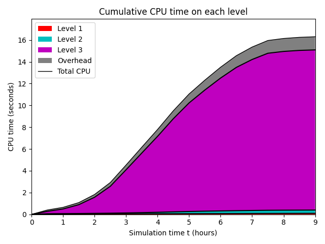

Datetime: 2024-03-23 15:30 From: /Users/rjl/clawpack_src/clawpack_master/geoclaw/examples/tsunami/chile2010/_output
============================== Timing Data ==============================
Integration Time (stepgrid + BC + overhead)
Level Wall Time (seconds) CPU Time (seconds) Total Cell Updates
1 0.086 0.091 0.864E+05
2 0.205 0.260 0.386E+06
3 2.497 13.217 0.214E+08
total 2.789 13.567 0.219E+08
All levels:
stepgrid 2.703 13.306
BC/ghost cells 0.080 0.254
Regridding 0.044 0.104
Output (valout) 0.947 0.946
Total time: 3.849 14.673
Using 6 thread(s)
Note: The CPU times are summed over all threads.
Total time includes more than the subroutines listed above
Note: timings are also recorded for each output step
in the file timing.csv.
clock_rate = 1000000000 per second, count_max = 9223372036854775807
clock_start = 1708381508057777000, clock_finish = 1708381511906440000
=========================================================================
